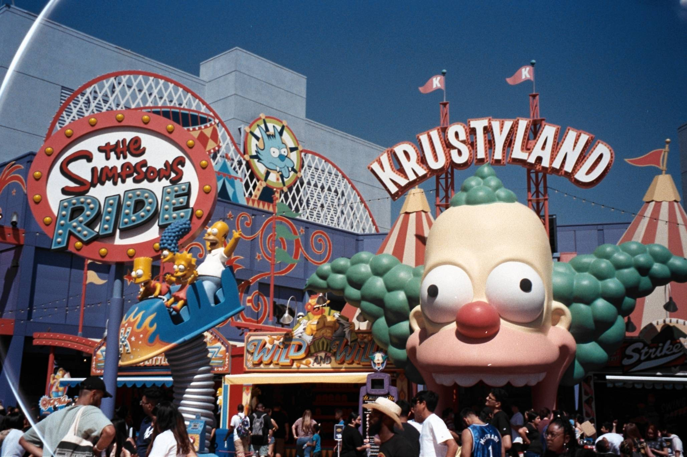
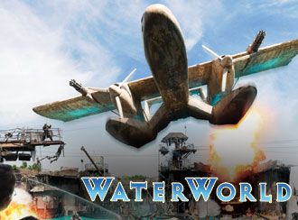
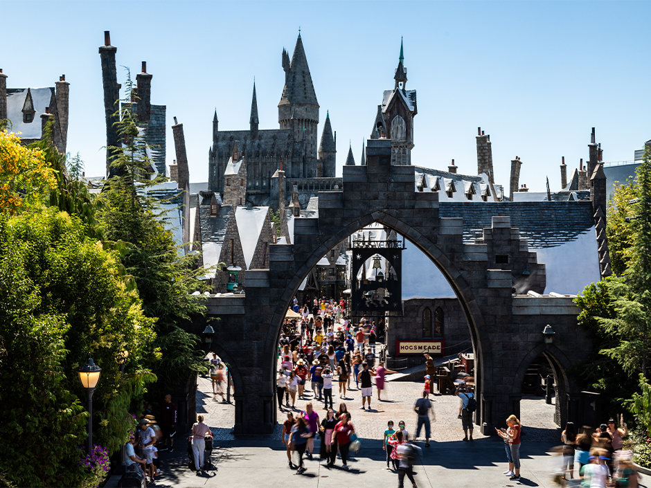
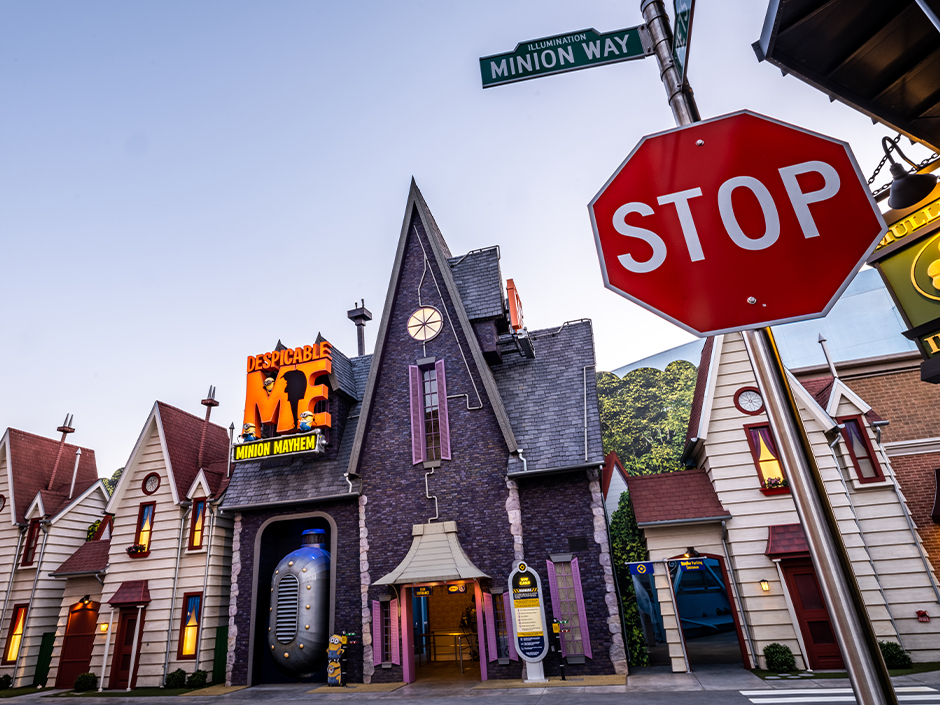
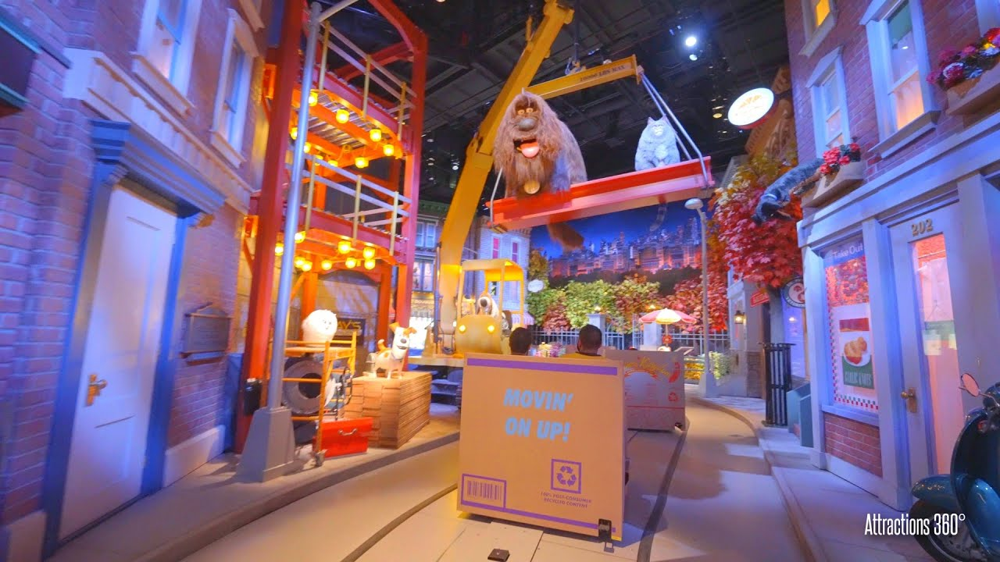
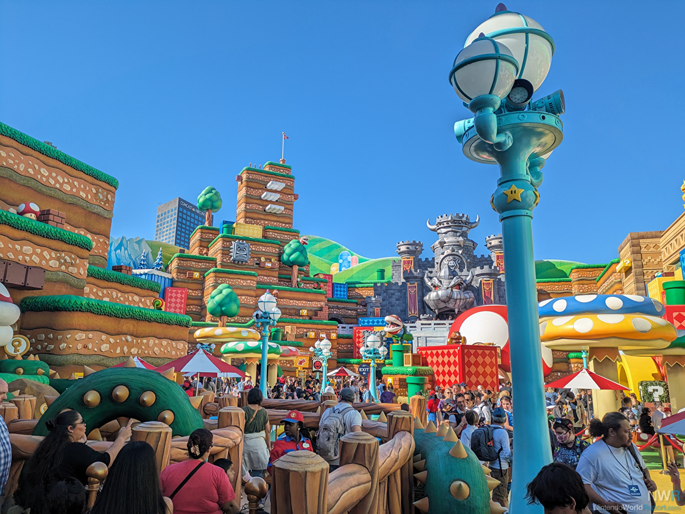
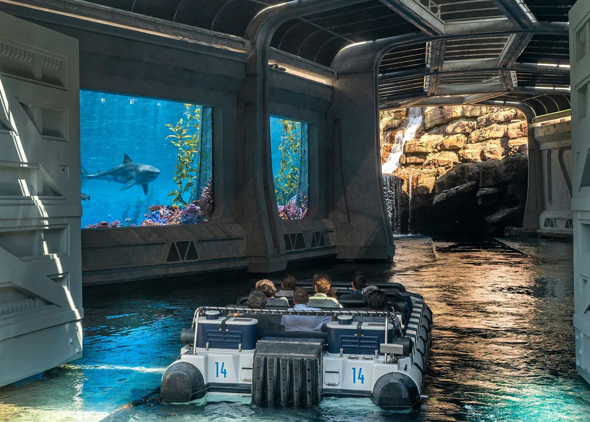
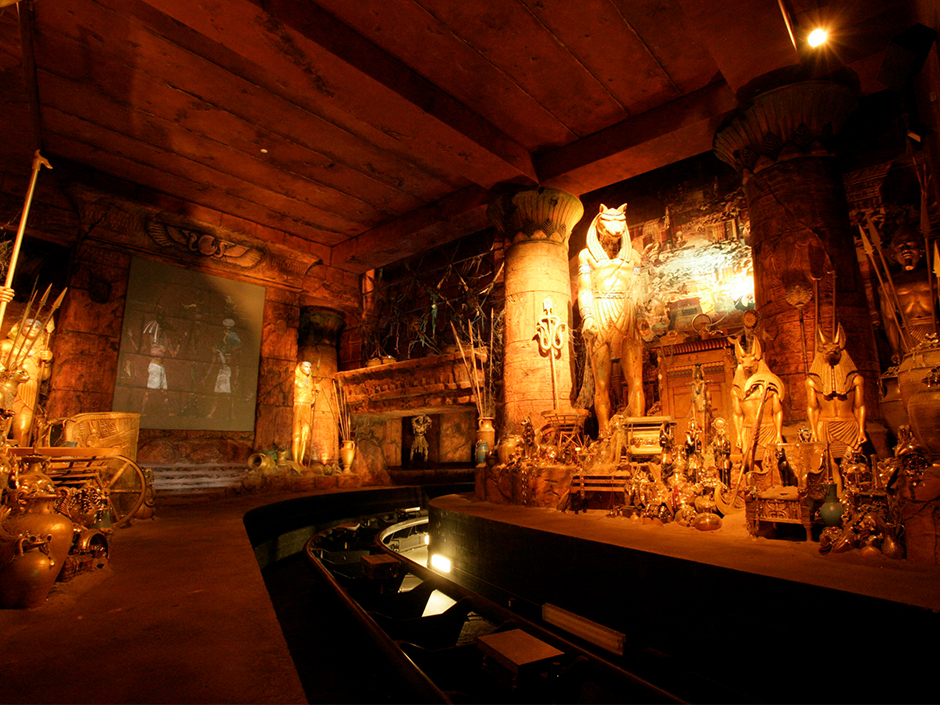
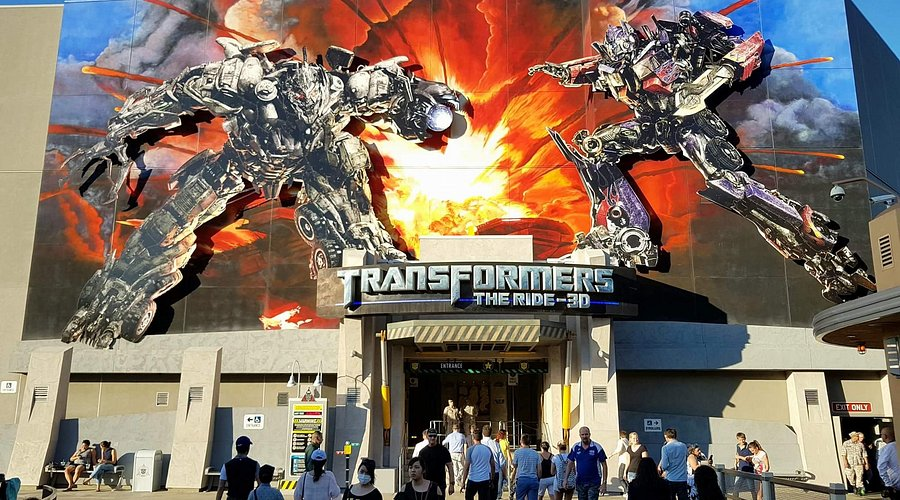
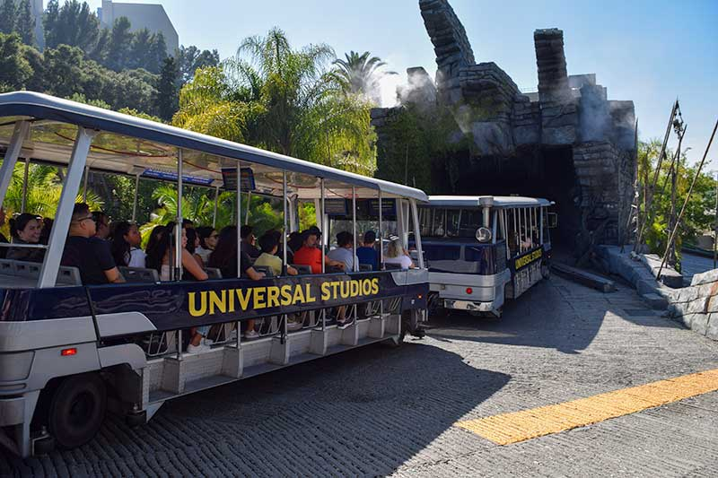

Upper Lot
Springfield
Coming straight from The Simpsons, the Springfield area features various challenging carnival games, themed food that looks as delicious as they do in the cartoons, and a chaotic ride with the Simpsons family.
Waterworld
An action-packed live show filled with stunts actors, immersive entertainment, fiery special effects, and lots and lots of water! This is a must-see show that is truly one-of-a-kind.
Hogsmeade
Known to be a village in the Wizarding World of Harry Potter, Hogsmeade features a large array of activities. You can get your very own wand, ride on the hippogriff, and gain flight powers, join Harry Potter and his friends, and explore the Hogwarts castle! This features one of my favorite rides at the park. The Butterbeer can't be missed either!
Despicable Me: Minion Mayhem
The Minions are always up to something! Become a minion in this ride and learn what if feels like to be part of this team. You'll be sat in a theater, and it is like a large simulation experience. This ride is full of something always happening and zero down-time. The exits leads to a mini dance party and small playground.
Secret Life of Pets: Off The Leash!
This slow ride allows you to see life through the
eyes of our own little pals! Get turned into
a little
pup and explore the city, wreak havoc, and even
get adopted by a loving family. This
ride is perfect
for young children or those who want to have a
more chill experience.
Lower Lot
Super Nintendo World
Join Mario and his friends, split into teams, and compete against your friends in Mario Kart: Bowser's Challenge! Features a hybrid course combining physical animatronics and VR effects. This game is a shooter and requires skill and practice, try to get the most points of your party!
Jurassic World: The World
One of the most iconic rides at the park, this ride takes place on the water. Watch the dinosaurs come back to life and learn about their history. Features an 80-foot drop, roaring dinosaurs, and lots of water. You will be getting wet!
Revenge of the Mummy: The Ride
This is one of the most intense and fastest ride at the park. This roller coaster hits a top speed of 45 miles per hour in an instant, and moves forwards and backwards. Just like the film it's based off of, it's quite thrilling! Leave all items behind.
Transformers: The Ride - 3D
A dark ride simulation that takes you on a high-speed chase! This is a 3D ride, with live special effects such as fire and wind, and it's full of vehicle action.
Studio Tour
Explore the Universal Studios Backlot!
 The most unique attraction in the entirety of the
park, the Studio Tour takes
place right on an active
studio backlot. Pass by working sound stages, old sets,
and even catch a glimpse of films in the making.
Learn about the history of Universal
Studios, their films,
and how their iconic backlot has evolved overtime.